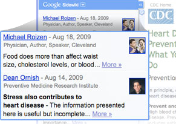

Entry published.
Your entry has been deleted.
These entries may be less useful. Click an entry to tell us what you think.
Learn more
Entries about the entire page:
Published.
See it in your Google profile
You rated this entry by as not useful.
Expand »
Google Sidewiki lets you read and contribute helpful information alongside any webpage.

For Sidewiki to work, this Chrome extension has to tell us what site you're visiting by sending Google the URL of the current page. Privacy notice
Loading...

Sign in to your Google Account to write an entry.
Entries for this page are not supported. Why?
Entries for this page are not available.
Writing as the page owner for:
Enter your name to write an entry.
This will also create a Google profile.
Learn more
| First name: | |
| Last name: |
As the page owner, you can write a special entry that will remain the top entry for this page.
Learn more Note: A page owner entry for the domain already exists. Edit
A new page owner entry will be shown instead of the entry for the domain.
A new page owner entry will be shown instead of the entry for the domain.
Note: A page owner entry already exists. Edit
To write or edit an entry for the entire domain, please delete this page owner entry first.
As the page owner, you can edit this special entry that will remain the top entry for this page.
As the owner of , you can edit this special entry that will remain the top entry on all pages of this domain.
Learn moreThis page contains content from other domains. You are writing your entry about .
To write an entry about a specific part of the page, highlight those words on the page.
To write an entry about the entire page, make sure no text is highlighted.
All entries are public and must follow our content policy.